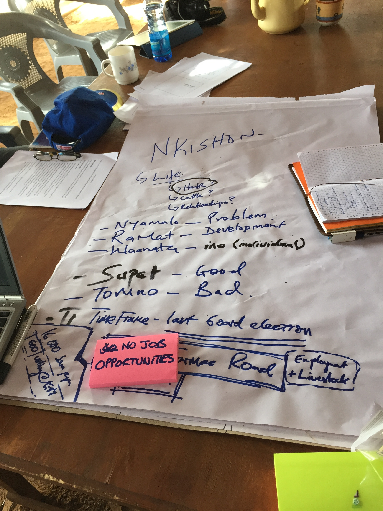

Governance of NRT Conservancies
Governance Scores 2012 to 2014
Deepali Gohil
Map of NRT Conservancies
NRTs Mission Statement
To develop resilient community conservancies that transform lives, secure peace, and conserve natural resources.
Community Conservancies
Lands that are collectively owned and managed by the resident indigenous communities are being set aside for wildlife conservation and sustainable livestock practices.
The Need
- Frequent Drought
- Sparse Government Services
- Degraded Rangelands and Poor Livestock Production
- Security Issues
- Cattle Rustling
- Ivory Poaching
- Ethnic rivalries
Peace and Security Needed for Livelihood Development, Protection of Wildlife and Growth of the Region.
Management Hierachies

Overview of NRT Governance Scores
NRT Governance Scores are:
Modular
- 15 Parameters
- Sub-parameters
Qualitative
- Score: Subjective
- Range: 0-2
Annual
Report Cards
Adaptive Management
Community Feedback
Social COMMS
- Collect annually?
- Need to integrate into score?
- Unbiased
Map neglected areas
"Benefit" assessment
"Impact" asessment
Governance Scores: 2012-2014
Average Annual Governance Scores
| Year | Average Score | |
|---|---|---|
| 1 | 2012.00 | 0.54 |
| 2 | 2013.00 | 0.60 |
| 3 | 2014.00 | 0.46 |
Choroplethic Governance Map
Integration with Social COMMS

- Importance
- Objectivity
- Survey Improvement
- Support from Community
- Transparency
Build Strong Conservancies.
Thank You
For more information you can contact:
+254 702 788 055